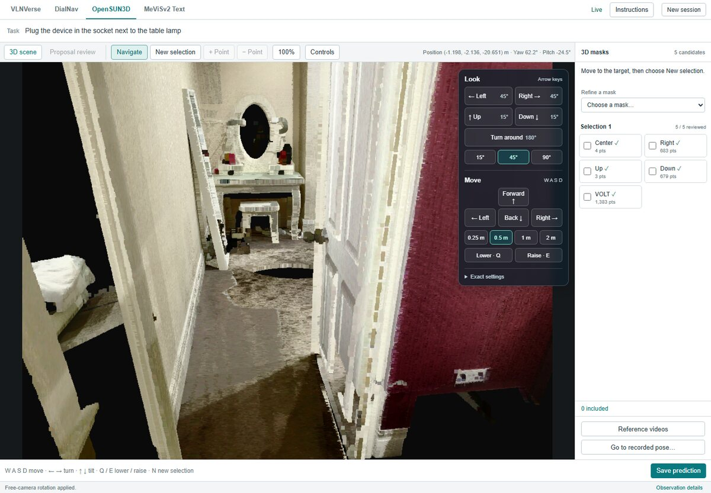
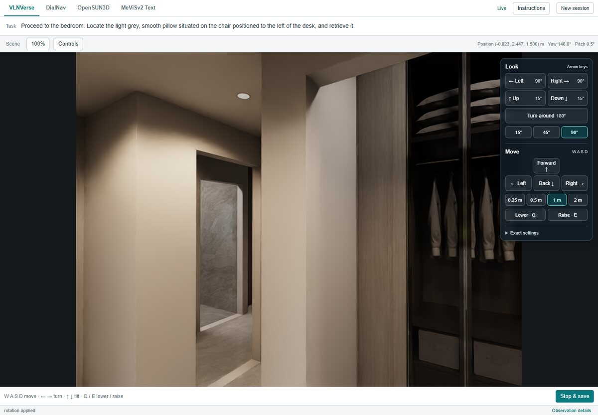
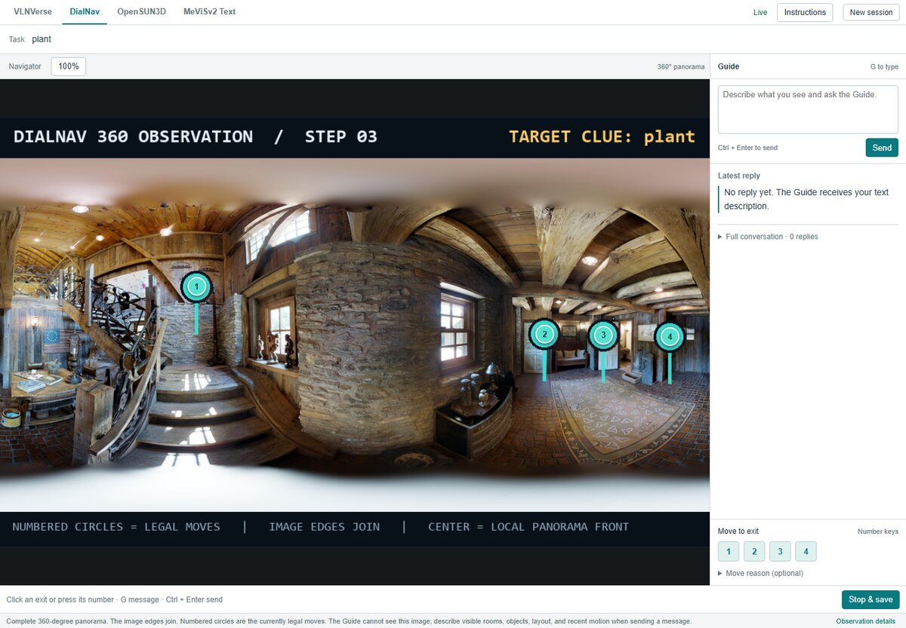
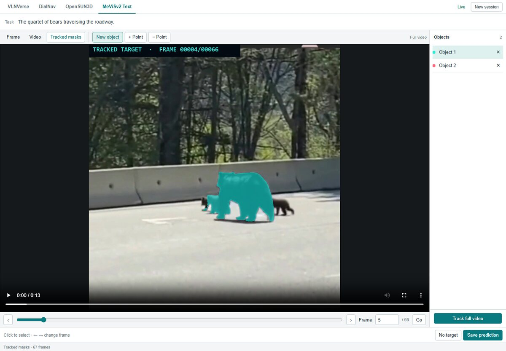

We ran a single computer-use agent across four embodied AI competitions at ECCV workshops,
changing only the software, and ranked first, second, third, and sixth.
Position
In many areas of AI, general-purpose models have increasingly replaced handcrafted methods and specialized architectures. We argue that embodied AI is poised for a similar shift. Our key claim is that embodied tasks can be formulated as interaction with digital software. Specifically, we build software that renders an agent's view of a physical environment on a screen and provides controls for acting in it. A computer-use agent (CUA) can then perform embodied tasks through the same screenshots and keyboard and mouse actions that it uses to operate ordinary software. Using a single CUA design and changing only the software, our entries win first-, second-, third-, and sixth-place prizes across four ECCV workshop competitions, without any competition-specific agent tuning. These results suggest that the skills CUAs learn on software, such as visual grounding, precise clicking, and exploration, already carry over to embodied tasks, giving CUAs a far broader scope in embodied AI than previously realized. We therefore advocate that computer-use agents can be embodied generalists. Further, we advocate that, by following the training strategy that made computer-use agents general, embodied AI can converge on a single general model as well, ushering in a new era of general embodied AI.
What We Think?
ClickTap a question to see our answer.
How is robotics different from computer use?
The main difference is time. A screen often changes slowly, so a computer-use agent can take its time before each click, while the physical world keeps moving and a robot must act as things change. Robots also act in 3D. A computer-use agent locates a target on the screen and clicks at the right coordinates. A robot must locate targets in 3D and coordinate its motors to reach the intended positions and orientations.
From our paper. Computer use and embodied AI require much of the same from an agent. The main difference is time.
Fine-grained motor control and real-time interaction may seem out of reach for computer-use agents. Yet in early 2024, precise clicking seemed equally out of reach, and today agents click precisely.
Will VLAs still exist?
We expect them to merge into one general model. Most VLAs today add a dedicated action head to a vision-language model, since robot actions are continuous and discrete tokens seem too coarse to express them precisely.
Computer-use agents faced exactly this problem in early 2024. A screen of a million pixels is effectively a continuous space, and early agents relied on Set-of-Mark overlays or separate grounding models to click precisely. With enough training, neither turned out to be necessary. Today, the same model that writes code and solves mathematics problems writes click coordinates as ordinary text. We expect embodied AI to end up in the same place, with that model also controlling robots.
Computer use
Early 2024A model plus Set-of-Mark overlays or a separate grounding model
TodayOne general model writes click coordinates as text click(812, 433)
Embodied AI
TodayMost VLAs add a dedicated action head to a vision-language model
We expectThe same general model also controls robots
Computer use dropped its specialized grounding components. We expect embodied AI to drop specialized action heads the same way.
A preliminary experiment supports this. We trained Qwen3.5 9B, a standard vision-language model, and π0.5 on the same 1,000 demonstrations of two tasks in a simulation with two robot arms. Qwen wrote its actions as plain text, with no action head. It matched π0.5, succeeding in 56% of 1,000 unseen instances against 59%.
How can a computer-use agent do embodied tasks?
We wrap each task in an app that the agent operates like any other software. For each of the four competitions, we built a GUI that renders the scene, a 3D scan, a video or a 360° panorama, with controls for moving, looking around and selecting. The agent sees screenshots and acts with the keyboard and mouse, as it would on any desktop.

Our OpenSUN3D app. The task asks for the part of the scene needed to plug a device into the socket next to the table lamp, so the agent must find and select that socket. The yellow circle is for the reader only.
This works because both settings require the same core skill, grounding fine-grained actions in visual observations. Finding a small button and clicking it is much like finding a drawer handle in a 3D scan and selecting it. In OpenSUN3D, the agent did exactly this and ranked first without any training on 3D tasks, about ten points ahead of the next entry on AP25.
Would an API work as well as a GUI?
We expect so for a capable agent, and in our tests the two performed about the same. With an API, the agent calls each operation in our apps as a text command, such as moving forward one meter, instead of clicking its button. We compared both on a subset of each competition's validation set, with the same model and the same underlying operations.
APIGUI
VLNVersevision-language navigation, Avg SR@3
83.9
85.2
DialNavdialogue navigation, endpoint success rate
67.4
63.4
OpenSUN3D3D affordance segmentation, AP50
26.7
28.1
MeViSv2motion-expression video segmentation, Final
95.8
94.6
Scores out of 100 on a subset of each validation set, with the same model and the same operations behind both interfaces. Each competition has its own metric, so compare within each pair.
The two stayed within four points of each other, and the GUI scored higher in two of the four competitions. We see GUIs and APIs as two choices of interface to the same software, and we expect a capable agent to perform equally well with either, although efficiency may differ.
What should embodied AI do next?
Follow the three phases that made computer-use agents general. First came visual grounding, with training data generated automatically from software, which exposes the identity and position of every interface element. Second came environments for reinforcement learning, with tasks and verifiers generated at scale. Third, agents are now being optimized for speed.
Phase 1Visual grounding
Computer useSoftware exposes every interface element, which yields grounding data at scale.
Embodied AISimulators expose every object and its 3D position, which yields the same.
Phase 2RL environments
Computer useGenerated tasks, environments and verifiers at scale.
Embodied AIPhysically realistic simulations with tasks and verifiers exposed through software.
Phase 3Speed
Computer useAgents optimized for completion time, not only success.
Embodied AIFaster models, hardware and harnesses for real-time control.
The three phases of computer-use agents and their counterparts in embodied AI.
Each phase has a direct counterpart in embodied AI. Simulators expose the identity and 3D position of every object, so they can generate grounding data at scale, given high enough visual fidelity. Physically realistic simulations, with tasks and verifiers available through software, can serve as RL environments. Faster models and hardware can make real-time control possible. This calls on embodied AI researchers to expose their simulators and robots through software that computer-use agents can operate, like the apps we built, and on developers of computer-use agents to include such software in training.
Isn't the software doing most of the work?
The software provides tools, and the agent decides how to use them. In MeViSv2, the agent gets a video and a sentence that describes an object by its motion. Our app wraps SAM 3, which segments an object and tracks it through the video once the agent clicks it. The agent still has to watch the video, work out which object the sentence refers to, click it, judge the mask, refine or discard it, and decide when it is done. In VLNVerse, the app only moves the camera, and every navigation decision is the agent's.
The agent decides
Where to look and where to go
Which object the task refers to
When to use each tool
Whether an output is right, and how to refine it
When the task is done
The app provides
A camera to move through the sceneVLNVerse and OpenSUN3D
Click-prompted segmentation and trackingSAM 3, in MeViSv2
Point-prompted 3D masks and part proposalsPinPoint3D and VOLT, in OpenSUN3D
A guide model that knows the destinationDialNav
Who does what across our four entries.
This split is deliberate. Desktop software also holds powerful functionality that a computer-use agent operates. Keeping task-specific functionality in the software, rather than in the agent, lets the same agent move across very different embodied tasks.
Did you tune the agent for each competition?
No. All four entries used the same agent implementation, system prompt, and keyboard and mouse action space. Between competitions, only the app and the task description changed, and each app comes with its own instructions, as any software does. We used Gemini 3.5 Flash and Gemini 3.6 Flash as released, with no fine-tuning.
Same agent · same system prompt · same keyboard and mouse actions

VLNVerse

DialNavOpenSUN3D

MeViSv2
The four apps, one per competition. VLNVerse and DialNav are navigation, OpenSUN3D is 3D affordance segmentation, and MeViSv2 is video object segmentation.
Isn't a click much simpler than robot control?
It looks simpler, but in early 2024 it was still too hard for AI agents. A screen of a million pixels is effectively a continuous space, and early agents could not act in it precisely on their own. They relied on Set-of-Mark overlays, numbered labels drawn over the screen so the model only had to name one, or on separate grounding models. With enough training, neither turned out to be necessary. Today a single model writes click coordinates directly as text.
123456
Early 2024The model names a label 5
TodayThe model writes coordinates click(812, 433)
An illustration. Set-of-Mark overlays let early agents name a label instead of a position. Today a single model writes pixel coordinates directly.
Robot control adds 3D and real time. But it is the same kind of problem, grounding a precise action in what the agent sees, so we argue for following the same development strategy in embodied AI.
Is writing robot actions as text new?
Not entirely. RT-2 and OpenVLA already showed that robot actions can be written as tokens without an action head, by mapping discretized actions onto tokens in the model's vocabulary.
RT-2
Discretizes each action dimension into 256 bins and writes each bin as a number token, such as 132.
OpenVLA
Overwrites its 256 least used tokens with the 256 bins.
Ours
No action head and an unchanged tokenizer. Actions are plain text, like a computer-use agent's click(812, 433).
Three ways to write robot actions as tokens.
Our experiment builds on a similar idea and goes further. We add no action head and do not even change the tokenizer. The model simply writes actions as text, in a format similar to how computer-use agents write click coordinates. Trained on the same 1,000 demonstrations as π0.5, a recent VLA with a dedicated action head, this plain vision-language model matched it, succeeding in 56% of unseen instances against 59%.
π0.5, with an action headQwen3.5 9B, actions as plain text
Success rate (%)two tasks, two robot arms, simulation
59
56
Both models were trained on the same 1,000 demonstrations and evaluated on 1,000 unseen instances.
Are autoregressive models fast enough for embodied AI?
In our experiment, yes, and the model sat idle most of the time. The 9B model controlled two robot arms in simulation and received a new camera image every second, as π0.5 did in the same setup. Each time, it either wrote an action, which can span more than a second, or chose not to act. Prefill took about 10% of the total time and decoding about 20%, so the model was idle for the remaining 70%.
Prefill, 10%Decoding, 20%Idle, 70%
Share of total time for the 9B model controlling two robot arms in simulation, with a new camera image every second.
That is without any optimization for speed. Computer-use agents are now being optimized for completion time, and embodied AI can do the same through rewards for finishing tasks in less time, faster inference hardware, and harnesses that interleave quick actions with slower planning.
Do GUI agents really match API agents now?
The strongest ones do. In 2024, agents acting only through the screen lagged far behind agents with task-specific APIs, and on Programming with Pixels the gap narrowed with each Claude generation. ApprenticeBench now finds that the strongest agents of 2026, such as Fable 5.1 and GPT-6 Astra, do as well through the GUI as through APIs, or better.
Our own results agree. In our four apps, where every button had a matching API command, operating through the GUI cost little. The two stayed within four points, and the GUI scored higher in two of the four competitions.
Are computer-use agents really superhuman?
In task success, yes. On the OSWorld tasks in CUA-Speedrun, the best agent today, Claude Opus 5.5, completes 96%, well above the 72% that humans reach on OSWorld. When OSWorld was released in April 2024, the best model completed 12%. In speed, agents are still slower than expert humans, which is why speed is the current phase of progress.
This rise took about two years, and it is the path we argue embodied AI can follow.
Why are robot tasks in simulation easy to verify?
Because the simulator exposes its full ground-truth state, while the policy sees only camera images. A verifier can read object poses, contact forces and material states, such as how much wine is in a glass. Checking success is then accurate even when doing the task is hard.
From Gym-Anything for Robotics, in a wine-pouring scene. The policy sees only camera images, while each task's verifier, marked V, reads the simulator state, for example to confirm 135 to 165 mL of wine in the glass with no spill.
In Gym-Anything for Robotics, every task has a deterministic verifier computed from the physical state of the simulation, with no VLM judge. We believe this asymmetry can provide more accurate rewards for RL and make tasks harder over time.
What about teleoperation and egocentric videos?
We think they may still matter, mainly in pretraining and midtraining. RL benefits from a strong initial policy, and training such a policy requires trajectories, from teleoperation in the real world or in simulation, or from egocentric videos. This mirrors the training recipes of existing LLMs.
Pretraining and midtraining
Teleoperation
Egocentric videos
A strong initial policy.
Reinforcement learning
Simulated environments
Verifiers
Where we believe research matters more.
Where we expect teleoperation and egocentric videos to fit in training.
How much of this data is needed remains unclear. Based on the preliminary results in our paper, we believe that perhaps much of it will not be needed, and that research on RL environments will remain more important.
OpenSUN3D
1st
Segment the part of a 3D scene needed for a described action, such as a handle for opening a drawer.
AP50 25.88(best other 21.45) AP25 36.52(best other 26.50)
How our software works
The software renders the laser scan of the scene, with free camera movement, rotation, and point selection.
The agent explores the scene, approaches the target, and clicks the relevant part. Each candidate mask appears
from four viewpoints. The agent can refine a selection with positive or negative points, move to another
viewpoint, or make a new selection, and then chooses which masks to save.
Segment the objects described by a motion expression throughout a video.
Final 86.72 · J&F 74.96 No-target accuracy 88.89
How our software works
The software provides a video player, a frame selector, and controls for adding, refining, and removing
objects. The agent chooses a frame and clicks each target, and SAM 3 segments these objects and propagates
their masks through the video. The agent reviews the tracked masks and can add positive or negative points,
remove an object, or select another one before running propagation again. A no-target control exports an
empty mask sequence.
Reach a destination through dialogue with a remote guide.
Endpoint success rate 65.26 SPL 52.87
How our software works
The software displays a 360° panorama, numbered exits to nearby viewpoints, a target clue, and a message
panel. The agent types descriptions and questions, reads the guide's replies, and clicks exits to move. A
guide model within the software knows the destination, infers the agent's location from its descriptions,
and returns directions.
The software is a 3D scene viewer with a first-person image and controls for moving and turning. The agent
moves with keyboard shortcuts or on-screen buttons, looks up or down, and adjusts the step size and rotation
angle. It uses the rendered views to find landmarks, explore rooms, and approach the target, and selects
stop when it arrives.